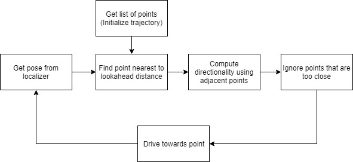
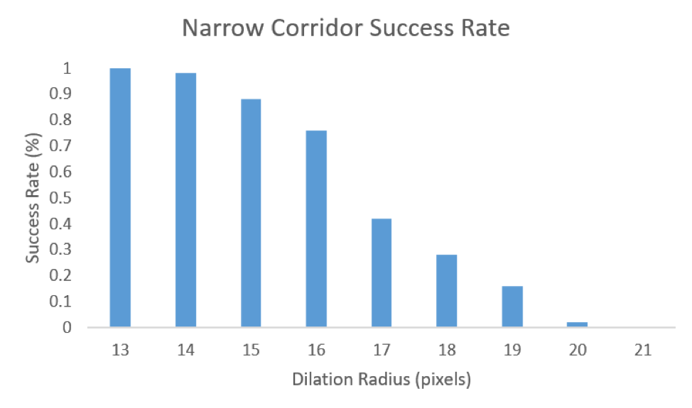

Slides for this lab are also accessible here.
In the last lab, we added localization capabilities to our robot to visualize its position and orientation in a given map. Although this feature is useful on its own, in order to be useful in the autonomous robotics world, it must be applied to larger problems such as trajectory following. In this lab, we generate paths through a known map and then use the previous localization capability to execute these trajectories autonomously, in simulation and in the real world.
There are many different path planning algorithms that can be used to generate trajectories, each with their own strengths and weaknesses. Ideally, we want an algorithm that is computationally fast and outputs the most optimal trajectory that avoids collisions with the wall. We looked into two categories of path planning algorithms: search-based and sample-based. Both techniques were explored in this lab and then tested against each other based on speed and trajectory-smoothness to determine which algorithm we implemented on the car. We finally implemented a pure pursuit controller to autonomously follow these generated trajectories given localization data. These steps are detailed later in the following report.
As a precomputation for our path planning algorithms, we dilated the occupancy grid map so that we could treat the car as a point moving through the two-dimensional map space. More details on our choice of map dilation are provided in the Experimental Evaluation section below.
For a search-based path planning algorithm, we implemented A*, which is similar to the traditional Breadth-First Search (BFS) shortest-path algorithm, but includes a heuristic to speed the growth of the search tree towards a known goal. The nodes in our search tree were defined to be cells in our discretized two-dimensional occupancy grid representing our map.
Our variation of A* worked by keeping a set of open nodes, meaning that they had been visited but their successors had not yet been explored, and a set of closed nodes, meaning that they had been visited and their successors had been fully explored. The successors of a node were defined as the eight nodes surrounding it to the north, east, west, south, north-east, north-west, south-east, and south-west. We parameterized our algorithm with a variable step size, such that our map was actually discretized into blocks of multiple pixels. For example, a step size of 10 would mean that the successors of a node are the four corners of a 19 x 19 square surrounding it, as well as 10 cells to the north, south, east, and west of it. Details for how we justified our selection of step size are given in the Experimental Evaluation selection below.
For our heuristic, we used Euclidean distance of a cell to the cell containing the goal point. A* keeps track of a cost function from the start node to the current node being explored based on how many steps it took to get from the start to that node. Summed with the heuristic function at the current node, this represented a kind of weight in our graph that made more direct paths to the goal more favorable, or shorter, in terms of total cost. At each iteration of the A* algorithm, we chose the node with the lowest cost from the set of open nodes to explore its successors next. The total cost of a node was updated if we reassigned its parent in our search tree. Figure 1 below shows the expansion of our search tree with a step size of 10 cells. Figure 2 shows the same algorithm running without the visualization of the intermediate search tree, to generate trajectories between waypoints creating a loop around the Stata building basement.
Figure 1 - A* Tree Expansion with Euclidean Distance Heuristic Our A* algorithm finds a trajectory between two clicked points on the map, showing the intermediate tree at each iteration. The step size for tree growth is 10 cells. The flashing effect is created by slowing down the video to better show how the tree expands towards the goal. Actual time data for the algorithm is presented in the Experimental Evaluation section below.
Figure 2 - A* Path Planning for Entire Closed Loop Our A* algorithm finds trajectories between waypoints to create a loop trajectory around the basement of the Stata building.
In addition to the search-based algorithm outlined above, we chose to implement the sample-based Rapidly-exploring Random Tree (RRT) algorithm. As shown in Figure 3 below, at each step of the algorithm, a new point was randomly selected from a uniform distribution of all permissible cells in the discretized two-dimensional map. Then, in order to connect the new point to our random tree, we looked at all existing nodes in the tree within a circle centered at the candidate point of some fixed radius (details for selecting this radius parameter are justified in the Experimental Evaluation section below). Out of all nodes within the circle, we picked one to be the candidate point’s parent in the tree based on optimal total path length starting from the start node all the way to the candidate point. In addition, we only considered parent nodes for which the line segment between parent and candidate would not collide with a wall or other obstacle; if all parent nodes would introduce a collision then the candidate was not added to the tree at all and the algorithm moved on to the next random selection.
As shown in Figure 4 below, this method produced fairly jagged trajectories because our candidate-addition protocol did not include a rewiring step outlined in some variations of the RRT algorithm. Were we to implement this optimization of our variant, we would also look at each node in the circle of fixed radius and consider if our candidate node would make a better parent for it than its current one, in terms of total path length from the start node.
Figure 3 - RRT Tree Expansion Our RRT algorithm finds a trajectory between two clicked points on the map, showing the intermediate random tree at each iteration. The video is sped up to mitigate the fact that the intermediate visualization slowed down the trajectory generation. Actual time data for the algorithm is presented in the Experimental Evaluation section below.
Figure 4 - RRT Path Planning for Entire Closed Loop Our RRT algorithm finds trajectories between waypoints to create a loop trajectory around the basement of the Stata building.
The pure pursuit controller would control steering and speed of the car to follow a trajectory given to it by the path planning module. It did this by taking in an ordered list of points that define the trajectory in the world frame, transforming the points into the car frame, and steering the car towards each point in sequence. The controller would have one significant parameter: the lookahead distance. This distance was used when selecting the point on the trajectory to pursue. All the points closer than the lookahead distance were ignored, and the process repeated. Figure 5 below shows the process flow of the standard pure pursuit controller.

Figure 5 - Pure Pursuit Controller Process Flow This figure shows the logical flow in the first iteration of the Pure Pursuit Controller.
The first iteration of our controller received the set of points defining the trajectory, and stored it in a list. Simultaneously, the localization module provided a pose estimate in the world frame. Using rigid body transformations, the controller calculated the position of each point on the trajectory relative to the car. We optimized the runtime by only transforming points near the car, since we knew that the list of points was ordered. It then selected the point nearest to the predefined lookahead distance. The controller then tracked this point, computing the turning circle radius so that the car’s path would contain the point. The steering angle from the Ackermann steering equations was then calculated, after which the drive commands were issued. Figure 6 illustrates the steering path and equations used to calculate steering angle given the relative (x, y) coordinates of the tracked point.
Figure 6 - Ackermann Steering Equations This figure shows the steering trajectory and the equations calculating the corresponding steer angle.
Due to potential sharp turns in the trajectory, there was an upper limit to our velocity given a lookahead distance; if the car was going too fast (i.e. overrunning its lookahead), it would miss the sharp turn and diverge from the trajectory. To remediate this, we implemented an anticipatory lookahead for our pure pursuit controller. This worked by having multiple lookahead distances that also kept track of the curvature of the path. This way, the speed could be increased when a straightaway was detected (as shown in Figure 7), and decreased when a turn was anticipated (as shown in Figure 8).
Figure 7 - Anticipatory Lookahead Tracking Straight Path This figure shows the points being tracked by the anticipatory lookahead while following a straight trajectory.
Figure 8 - Anticipatory Lookahead Tracking Curved Path This figure shows the points being tracked by the anticipatory lookahead while following a straight trajectory.
The pursuit module and the anticipatory lookahead were originally intended to function as separate modules, with the former controlling steering, and the latter controlling speed. However, we decided to vary lookahead distance with speed since we observed oscillations in steering if the lookahead was too close compared to the speed. The revised process flow of the controller is shown in Figure 9 below.
Figure 9 - Anticipatory Lookahead Pure Pursuit Controller Process Flow This figure shows the logical flow in the second iteration of the Pure Pursuit Controller, this time with anticipatory lookahead.
We implemented our path planning algorithms as nodes publishing trajectories between waypoints. Our pure pursuit controller subscribed to both these trajectories and the localization data given by the particle filter from the staff solution for Lab 5 in order to publish drive commands for the robot. The interaction of these publishers and subscribers is shown below in the node graph in Figure 10. Demonstrations of the path planning and trajectory following working together in simulation and real life are shown in Figure 11 below.
Figure 10 - Graph of Nodes and Topics for ROS Implementation The organization of ROS publishers and subscribers for path planning, localization, and trajectory following is shown by this graph of nodes and topics.
Figure 11 - Path Planning and Trajectory Tracking on the Racecar The top video shows the simulated racecar planning and following a trajectory around the Stata basement loop. The bottom video shows the real racecar doing the same.
In order to determine whether to use A* or RRT on our robot, we quantitatively evaluated the speed of the algorithms and qualitatively evaluated the smoothness and lengths of the trajectories. We began by choosing a common start and end location to be used throughout the tests. For the speed and smoothness tests, we chose these points such that the planned path would execute a corner and go through the most narrow corridor, as seen in Figure 12.
Both algorithms had a parameter that could be tweaked to potentially alter the speed of the computations. For the sample-based algorithm, this was the radius within which we considered parents for a candidate node, detailed in the Proposed Approach section above. For the search-based algorithm, this parameter was the step size of the search tree, also detailed in the Proposed Approach section. For the speed test, we varied these parameters and measured the amount of time it took to run the functions. Figures 13 and 14 show the results of this test for the sample- and search-based algorithms respectively.
For the sample-based algorithm, we found that changing the radius did not significantly affect the speed of the algorithm. This was due to the fact that the RRT method had a very high standard deviation because of its inherent randomness. Since this method uses random sampling, the paths generated vary widely on each run, even when the same start and end points are clicked. Therefore, the radius could not be proven to have a statistically significant effect on the speed. On average, the sample-based algorithm took between 8 and 9 seconds to generate the path given in Figure 12.
As for the search-based algorithm, increasing the step size from 1 cell to 5 cells was able to drop the run time from around 5 seconds to under 0.1 seconds. Additionally, the A* method always outputs the same optimal path and will search through the grid in exactly the same manner if given the same start and end points. Thus, there is a very low standard deviation. The standard deviation seen in Figure 14 is due to human error in attempting to click the very same start and end points for each run.
Figure 12 - Test Map for Speed Evaluation The start and end points used to evaluate the speed of the search- and sample-based algorithms. The points were chosen such that the trajectory would have to pass through the narrow corridor.
Figure 13 - Speed Results of Sample-Based Algorithm Graph of the computation times for the RRT approach using various radii of permissible parent nodes. The results show that due to the large standard deviation, the time differences are not statistically significant.
Figure 14 - Speed Results of Search-Based Algorithm Graph of the computation times for the A* approach using various step sizes. The higher we set our step size the faster the algorithm ran. With a step size of 5 cells, A* ran in less than 0.1 sec.
The speed of our path planning algorithm is important for the robot to run in a real life environment. However, it is also important that our output trajectories are consistent and smooth so that it is easier for our robot to follow with its controller. We used the same start and end points as in the speed test to generate trajectories. We then visually compared the length and smoothness of the paths.
We found that the RRT method produced jagged paths with sharp corners (an algorithmic variation that would help alleviate this, called rewiring, is detailed in the Proposed Approach section above). Additionally, there were several instances of the path overshooting the endpoint or taking the long way around the map, making the paths longer than they need to be (Figure 15).
Figure 15 - Smoothness Results for Sample-Based Algorithm Example images of five trials for the RRT technique. Since RRT uses random sampling, the final trajectories are all different and not optimal. Additionally, the trajectories are jagged with sharp turning corners.
Figure 16 - Smoothness Results for Search-Based Algorithm Example images of five trials for the A* technique. A* always finds the optimal path, therefore all of the final trajectories are the same. The turning angles are also more smooth compared to RRT.
The A* method, on the other hand, produced much smoother trajectories and never overshot the endpoint. This was due to the fact that the A* method always returns the most optimal path. Since our variation of A* outperformed that of RRT in speed, length, and smoothness in the context of our lab, we decided to use this search-based algorithm on our car. However, the successfulness of A* depends on the map we use. For example, if we used the given map where the boundary of the walls were given with a width of 1 cell, the generated path would only be 1 cell away from the wall. In the real world, this would lead to the car colliding with the wall. Therefor, we set a dilation radius to extend the width of the walls such that the planned trajectory would treat any area close to the wall as a nonpermissible state, allowing us to treat the car as a point rather than a rigid body in our path planning.
With this map dilation method, we needed to decide how high to set our dilation radius to ensure a safe distance of the car from the wall while still allowing for the car to pass through narrow corridors. To find this optimal radius, we measured how many times a planned path failed to travel through the narrow corridor (instead opting to take the long way around the map) given a specific dilation radius. Figure 17 shows the start and end points used for this test and is an example of a failed test case.
50 trials were performed for each dilation radius and the success rates are plotted in Figure 18. As seen from these results, as the dilation radius is increased from 13 to 21, the success rate of the path planning algorithm steadily decreases. In order to ensure a success rate of 100%, the maximum dilation radius we can use is 13 cells. Therefore, we used this value for dilating our map in both simulation in real life.
Figure 17 - Test Map for Dilation Tests The start and end points used to evaluate the effect of map dilation on the search based algorithm. The points were chosen such that the trajectory would have to pass through the narrow corridor if it succeeded.

Figure 18 - Results of Effect of Map Dilation on Efficiency The results of the success rates of trajectory planning given a specific dilation radius for the map. If the path went through the narrow hallway it was considered a success, but if it took the long way around the map then the dilation was set too high. A dilation radius of 13 is the highest radius that results in a success rate of 100%.
Figure 19 - Plot of Distance to Point vs. Time This figure shows the tracking of the path by the controller and the variations in lookahead distance from changes in speed.
We took a rather straightforward approach to evaluating and tuning our pure pursuit controller. We plotted the distance to the followed point with time, as shown in Figure 19. Each spike in the graph represents the switching from one point to the next along the trajectory. The downward slopes show the car moving towards the followed point before marking it as reached and moving on to the next point. Each of the peak heights shows the lookahead distance at that timestamp and each of the minima shows the distance where the car considered itself to have reached that point. The vertical shifts in the graph show the variations in speed, which we then used to alter lookahead distances. The simulation is not perfect, however, so there are places where speed rapidly increases and decreases in the middle section of the graph (hence the varying spike heights).
During our testing, we encountered a few instances where the planned path was too tight around a corner. In these scenarios, the distance between the path and the wall was less than the lookahead distance, causing a situation where the car is attempting to pursue a point behind a corner, as depicted below in Figure 20.
Figure 20 - Issue with Close Corners This figure shows a potential issue when tracking a path that wraps around a corner too closely.
We theorize a potential solution to this that involves using the LIDAR scan data to momentarily override trajectory tracking until the car clears the corner. It would do this by checking for wall scans between the car and the tracked point, clustering the points to find the corner, and steering around it at an angle proportional to the distance to the wall. This scheme of LIDAR override is depicted in Figure 21 below.
Figure 21 - Potential Solution to Close Corner Issue This figure shows a potential solution to the issue with close corners, involving using LIDAR data to avoid the corner.
By the end of the lab, we chose A* to be the most viable path planning algorithm for the needs of our lab and final challenge. However, there are still some tradeoffs that came with using A*. For example, since the success of the algorithm is dependent on the dilation radius, we can only set the distance from the wall to be so far. In the future, we plan to either change the cost function of our heuristic or set several waypoints so that the distance from the wall is no longer a function of the dilation radius. We might also alter our heuristic further to implement smoother curves, potentially switching from piecewise line segments to Dubin’s Curves to make our paths more appropriate for the dynamics of the car. During testing, we also learned that our pure pursuit controller sometimes caused the robot to cut corners resulting in collisions. We plan to use lidar data to temporarily override the drive commands and also tweak our lookahead distances for the best performance.